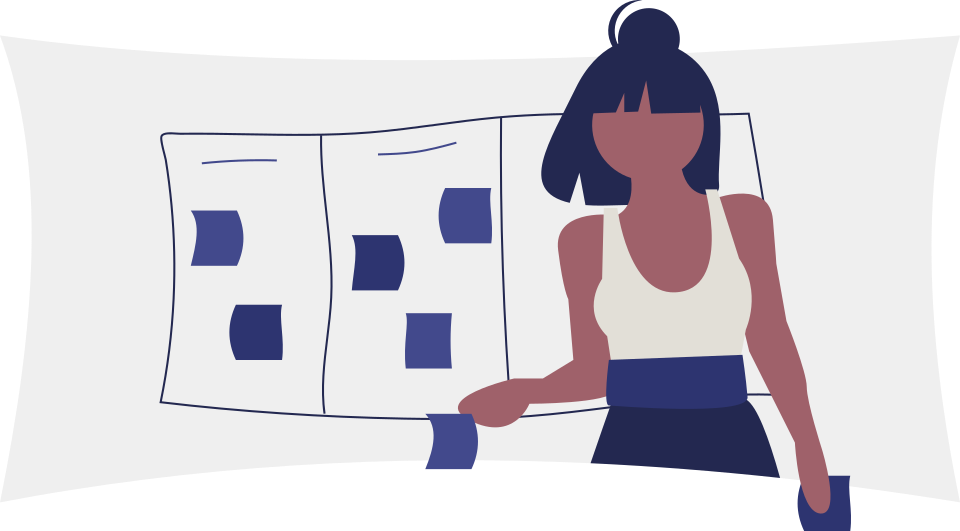
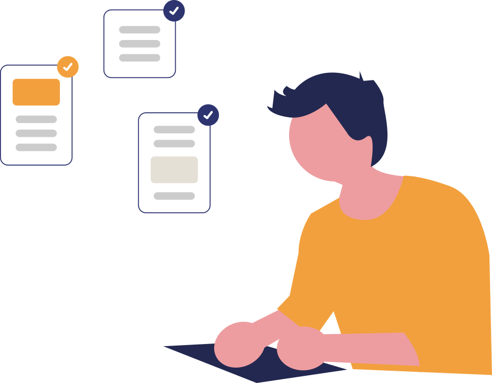

Simplify your processes. Automate what slows your teams down.
We rethink your processes before automating them, then integrate with the tools your teams already use to cut delays, errors and repetitive work.
What we do
We start by understanding what the process is for, remove the steps that exist only for historical reasons, and then automate what remains.
The result runs inside the tools people already have, Teams, Outlook, SharePoint, rather than adding another system to learn.
Where the process has to reach an on-premises database, an ERP or a legacy line-of-business application, we connect through premium connectors and the on-premises data gateway rather than forcing a migration first.
Where a step requires judgement over unstructured content, we add an AI layer rather than leaving a human to do clerical work inside an otherwise automated flow.
Technologies we use
How the engagement runs

- 01Understand
Map the process as it really runs
- 02Simplify
Remove steps that add no control or value
- 03Automate
Flows, approvals and applications
- 04Integrate
Microsoft 365, on-premises and third-party systems
Where this applies

Approval and validation workflows
Multi-level approvals with delegation rules, audit trail and escalation, replacing email chains and spreadsheets.
HR and administrative requests
Leave, mission orders, overtime approval, hiring steps, document requests and meeting management, connected to the ERP where needed.
Provisioning and onboarding
Requests that trigger controlled, traceable technical execution: accounts, groups, licences, workspaces and permissions.
Six HR and administrative processes digitalised
For an agri-food group we digitalised six HR and administration processes, leave requests, hiring, mission orders, document requests, meeting management and overtime approval, with a connection to the company ERP, alongside a full intranet and document migration.
Or browse all case studies in this domain.